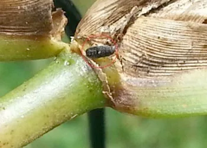
Chinch Bugs
Small insects that feed on turfgrass and may cause yellowing, browning, and expanding areas of damage.
Identify common South Florida lawn pests, landscape insects, plant diseases, and household pests.
Explore common signs and where these problems may occur. Select a category to narrow the gallery, then open a card to learn more.

Small insects that feed on turfgrass and may cause yellowing, browning, and expanding areas of damage.
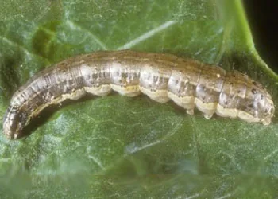
Caterpillars that feed on grass blades and may rapidly thin or brown turf.
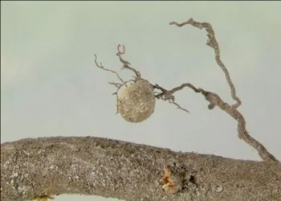
Root-feeding scale insects that can contribute to gradual thinning and turf decline.
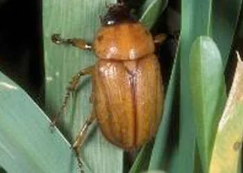
White grub larvae feed on roots and can leave brown patches of turf that lift easily.
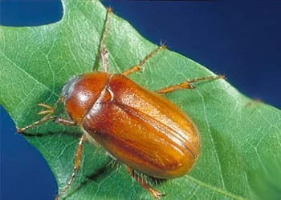
Underground larvae can feed on roots and contribute to wilting and thinning turf.
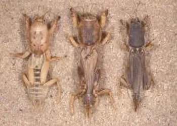
Burrowing insects that disrupt turf as they tunnel through soil and feed.
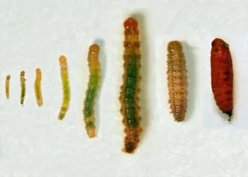
Lawn moth caterpillars that chew grass blades, leaving thin or irregular areas.
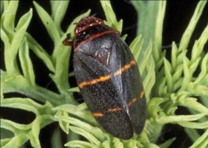
Sap-feeding insects whose nymphs produce foamy masses and may weaken plants.
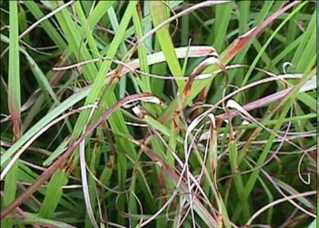
A fungal turf disease that may produce straw-colored patches and blade lesions.
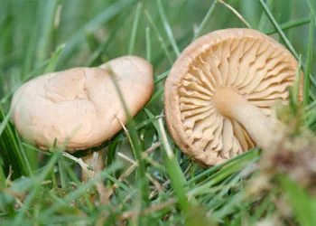
Fungal growth in soil can create circular areas of darker, brown, or declining turf.
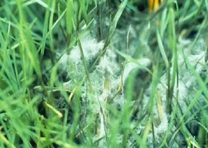
Warm, wet conditions can encourage greasy-looking, water-soaked turf patches.
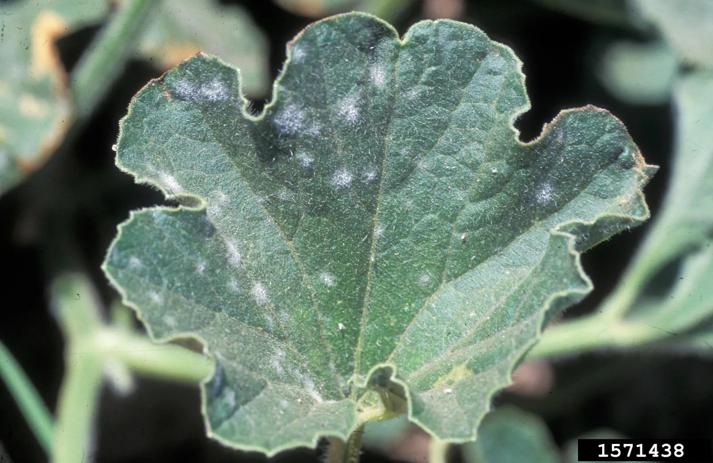
White or gray powdery growth can appear on leaves and other plant surfaces.

A fungal turf disease that produces discolored patches, often favored by damp conditions.
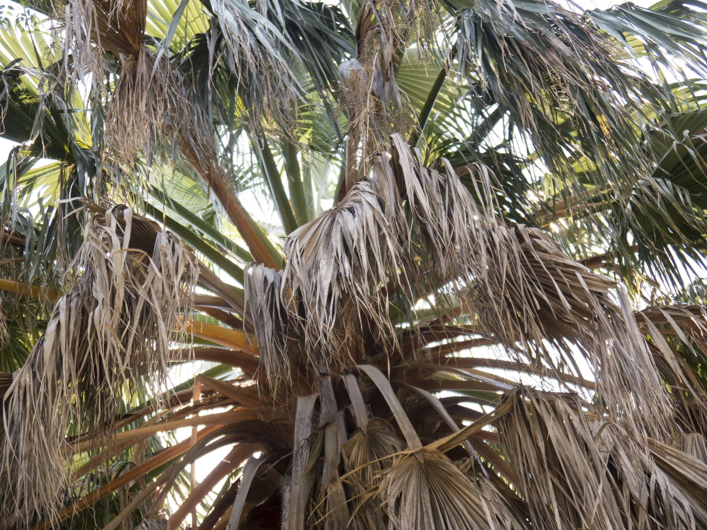
A serious palm disease that causes fronds to discolor and die.
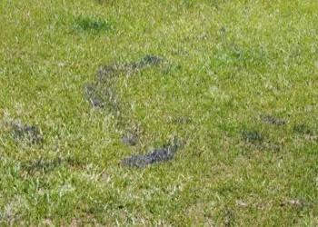
A surface growth on grass blades that is usually cosmetic rather than directly damaging turf.
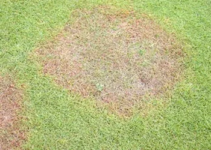
A root disease that can weaken turf and cause yellowing, thinning, and decline.
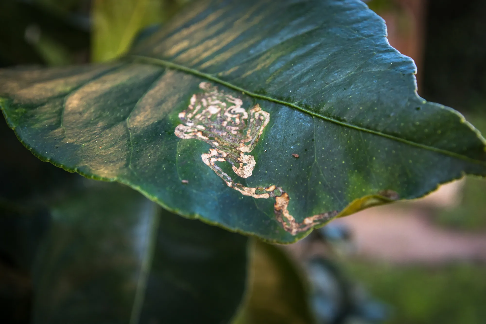
Moth larvae tunnel through young citrus leaves, leaving winding trails and curled foliage.

A scale insect that can cover cycads with white, crust-like infestations.
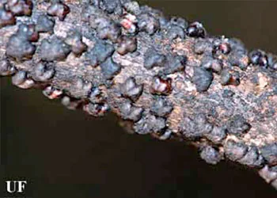
A sap-feeding scale found on ornamental stems and branches that may cause dieback.
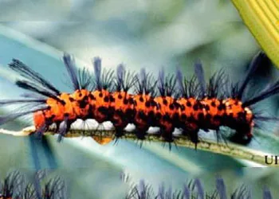
Bright caterpillars that feed on oleander leaves and can strip foliage.
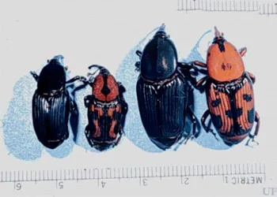
Larvae tunnel inside palms and may cause internal damage and decline.
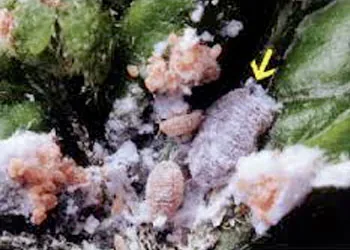
A sap-feeding insect that can distort new growth and weaken ornamentals.

Sap-feeding insects that may cause yellowing, stunted growth, and sticky honeydew.
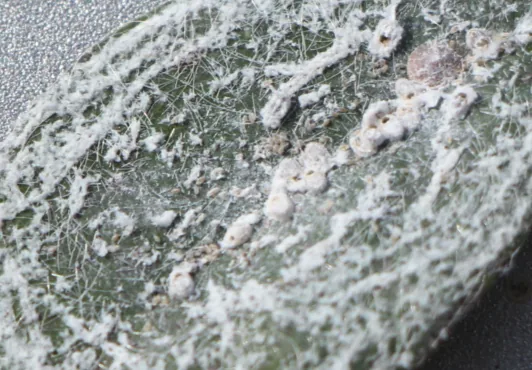
Eggs in spiral patterns and sap feeding can lead to honeydew and sooty mold.
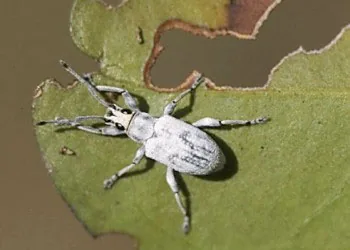
A small beetle that leaves characteristic notches along leaf edges.
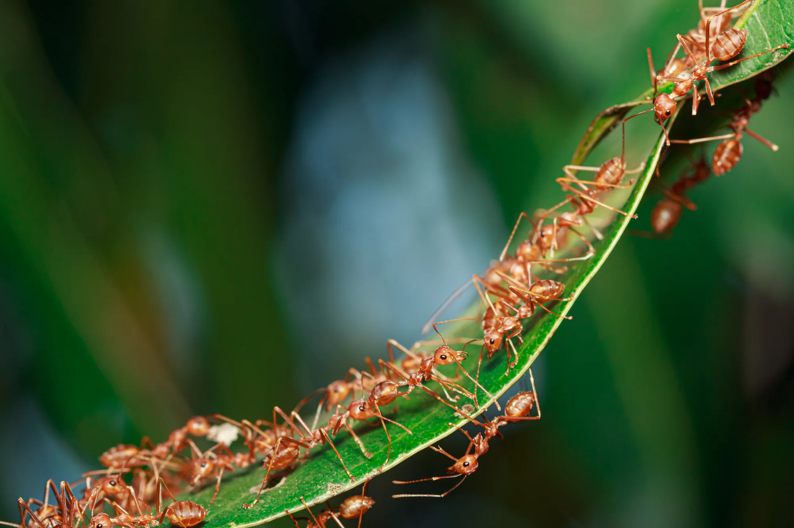
Stinging ants that form mounds in lawns and landscaped areas.
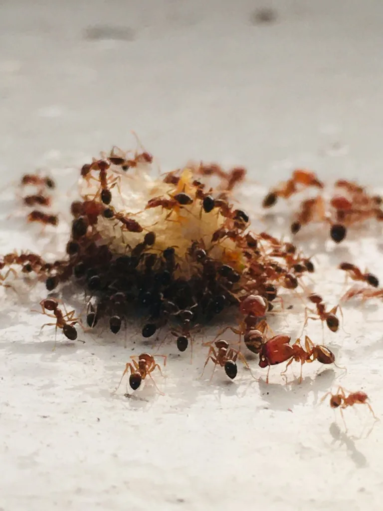
Small ants may enter homes in search of food, water, and shelter.
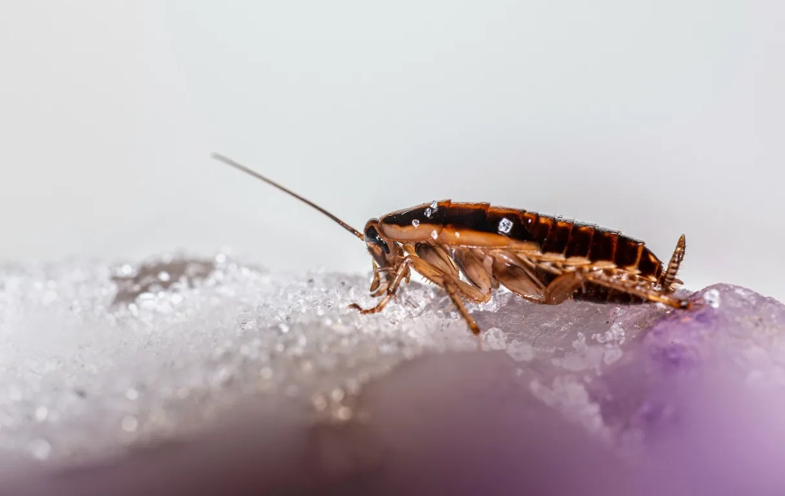
Moisture and available food can encourage activity in sheltered areas.
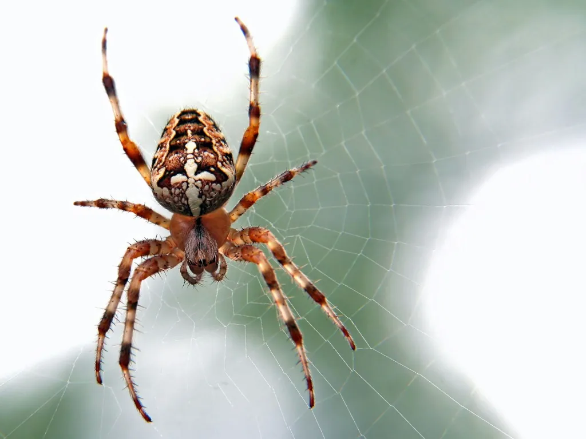
Spiders may be found around windows, garages, storage areas, and landscaping.
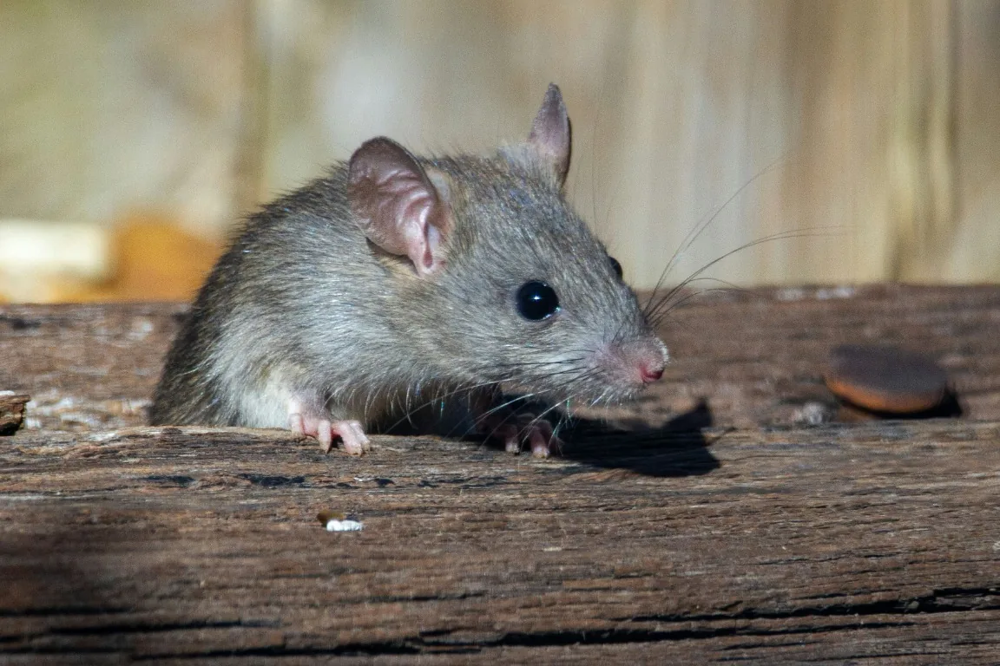
Signs can include droppings, gnaw marks, and sounds in walls or attics.
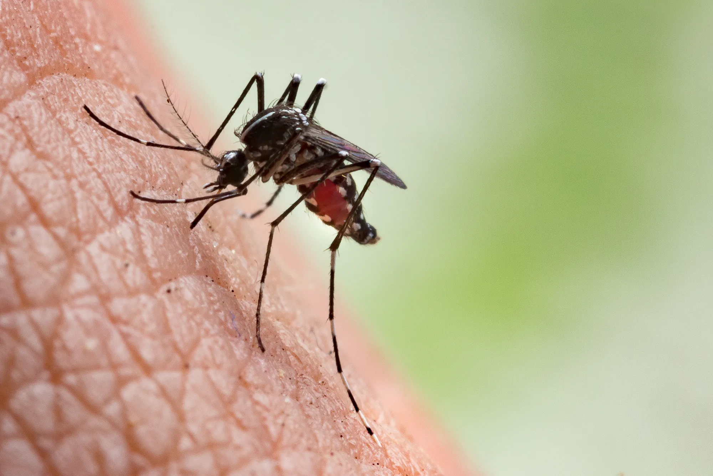
Reducing standing water is an important part of mosquito management.
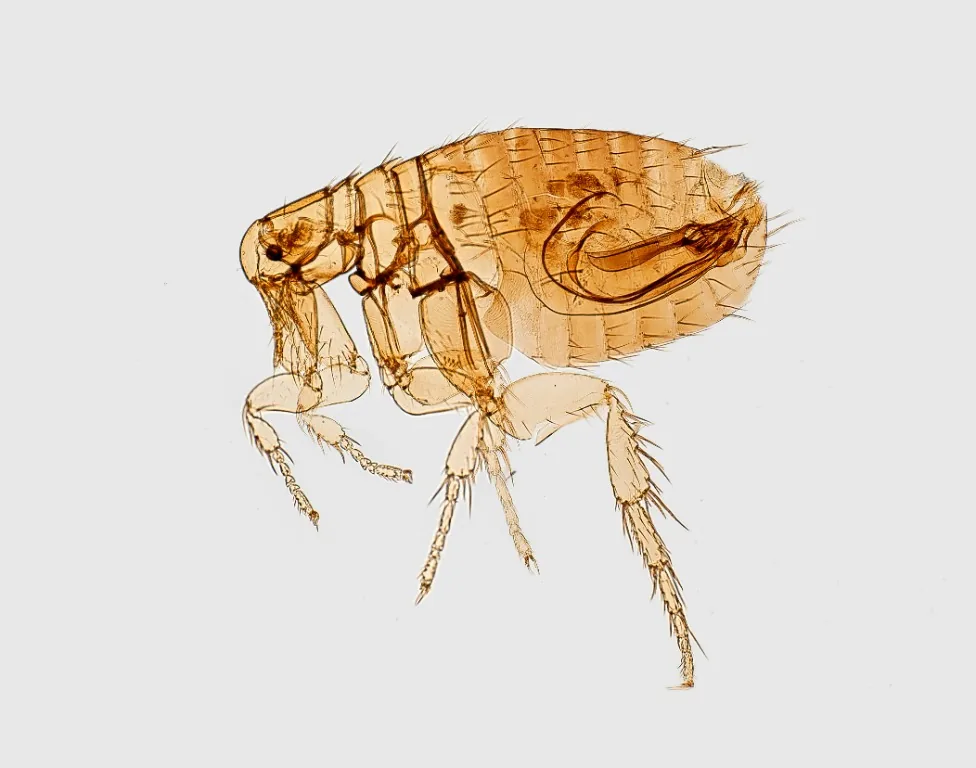
Fleas can affect pets and occur in indoor resting areas and shaded outdoor spaces.
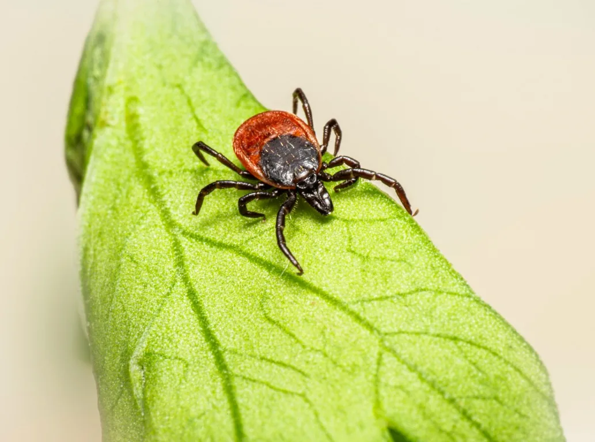
Ticks may be encountered in vegetation or brought indoors on pets and clothing.
The gallery is educational; visible symptoms can have multiple causes. A professional property assessment can help determine the next step.
*Numerous photos are credited to the University of Florida/IFAS Extension.
Let Royal Green help identify the problem and discuss an appropriate service.